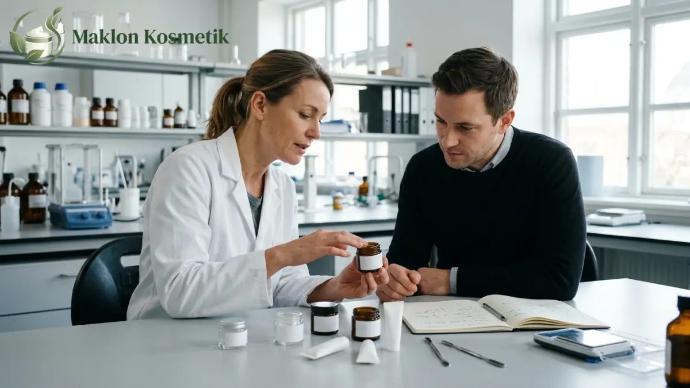
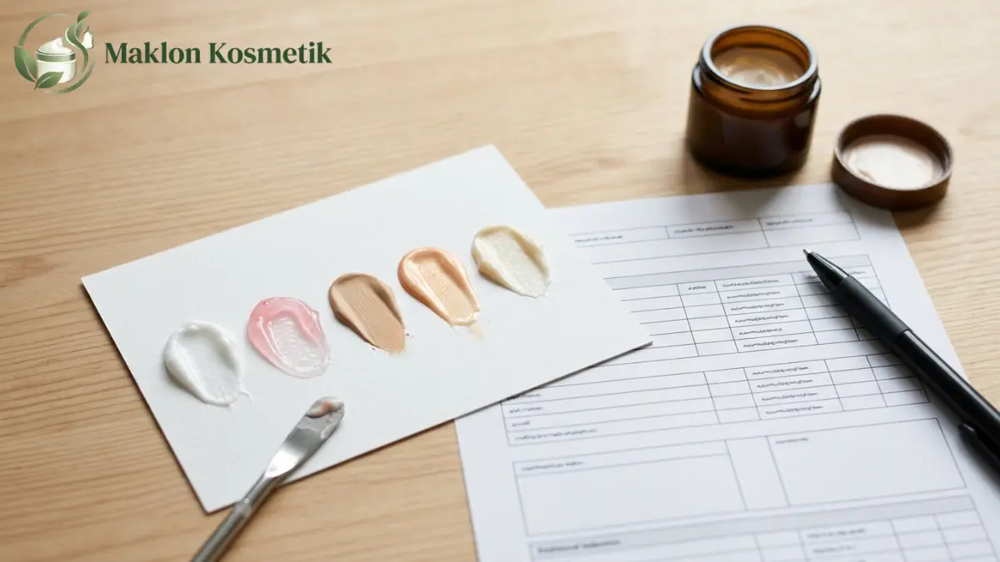

Prosedur Pengajuan Revisi Sampel Maklon Kosmetik Sampai Ketemu Formula Pas
Prosedur pengajuan revisi sampel maklon kosmetik dimulai dari evaluasi sampel, feedback tertulis per parameter, revisi formula oleh pabrik, hingga persetujuan sampel final yang pas.
- Revisi sampel berjalan efektif bila brand menilai sampel dengan parameter yang sama pada setiap putaran.
- Feedback tertulis yang spesifik membuat formulator pabrik dapat mengubah variabel dengan tepat.
- Jumlah revisi, biaya, dan waktu pengerjaan sebaiknya disepakati tertulis sebelum sampel pertama dibuat.
- Formula perlu dikunci sebelum proses notifikasi BPOM dan sertifikasi halal dimulai.
- Persetujuan sampel final harus tertulis agar menjadi standar produksi massal.

Daftar Isi
Apa Itu Revisi Sampel dalam Maklon Kosmetik?
Revisi sampel maklon kosmetik adalah permintaan perbaikan formula contoh produk kepada pabrik maklon, berdasarkan feedback brand tentang warna, tekstur, aroma, kenyamanan, dan performa produk.
Pabrik maklon, atau industri penerima kontrak, biasanya membuat sampel awal berdasarkan brief brand. Sampel pertama jarang langsung sesuai harapan, karena preferensi tekstur, kekuatan warna, dan sensasi di kulit sulit dijelaskan hanya lewat kata-kata.
Revisi adalah proses terstruktur untuk menjembatani selisih antara brief dan hasil nyata. Proses ini sangat penting bagi brand baru, UMKM, dan kreator kecantikan yang belum memiliki tim formulasi internal.
Manfaatnya adalah menghasilkan formula yang benar-benar sesuai target pasar sebelum biaya produksi massal dikeluarkan. Batasannya, revisi tidak dapat berjalan tanpa batas, karena setiap putaran memakan waktu, bahan, dan tenaga formulator.
Data Penting: Berapa Banyak Pabrik Kosmetik dan Seberapa Besar Pasarnya?
Data BPOM yang dikutip Kemenperin pada Mei 2026 mencatat 1.684 industri kosmetik di Indonesia, dengan sekitar 85 persen berupa industri kecil dan menengah. Angka ini membuka peluang luas bagi pemilik brand untuk memilih mitra formulasi.
Data tambahan yang relevan bagi brand yang sedang memilih pabrik mencakup nilai pasar kosmetik Indonesia sekitar 9,74 miliar dolar AS pada 2025, dengan proyeksi melampaui 10 miliar dolar AS pada 2026 berdasarkan Statista.
Menurut Pasal 7 ayat 2 Peraturan BPOM 21 Tahun 2022, perjanjian kontrak produksi untuk notifikasi harus dibuat dengan industri bersertifikat CPKB yang sisa masa berlakunya paling singkat 6 bulan saat pengajuan berlangsung.
Jumlah pabrik yang banyak berarti kemampuan lab dan kebijakan revisi antarpabrik sangat beragam. Karena itu, brand sebaiknya membandingkan cara kerja dan kedisiplinan formulasi setiap pabrik, bukan hanya terpaku pada harga per unit.
Bagaimana Prosedur Pengajuan Revisi Sampel Maklon Kosmetik Langkah demi Langkah?
Prosedur revisi sampel terdiri dari menerima sampel, menguji, menulis feedback, mengirim permintaan revisi, mengevaluasi sampel baru, dan mengulang sampai brand menyetujui sampel final secara tertulis.
- Siapkan brief dan acuan: Cantumkan target warna, tekstur, aroma, klaim produk, dan lampirkan contoh produk pembanding jika ada.
- Terima sampel dan beri kode versi: Setiap sampel fisik perlu diberi nomor versi yang jelas, misalnya V1, V2, dan V3 untuk menghindari tertukar.
- Uji dalam kondisi standar: Gunakan cara pengolesan, jumlah takaran, dan pencahayaan ruangan yang sama pada setiap sampel uji coba.
- Tulis feedback per parameter: Pisahkan secara objektif hal yang sudah sesuai dari hal yang masih perlu disesuaikan kembali.
- Kirim permintaan revisi tertulis: Sertakan skala prioritas perbaikan, dokumentasi foto swatch, dan hasil perbandingan langsung.
- Diskusikan kelayakan teknis dengan formulator: Pabrik akan menjelaskan perubahan yang mungkin, risiko fisik formula, dan dampaknya terhadap biaya.
- Evaluasi sampel revisi: Bandingkan sampel terbaru secara side-by-side dengan versi sebelumnya dan brief awal Anda.
- Setujui sampel final secara tertulis: Sampel yang telah disetujui menjadi acuan baku untuk tahapan produksi massal pabrik.
Langkah 3 sampai 7 berulang secara teratur sampai formula dianggap pas dan disepakati oleh kedua belah pihak sebelum melangkah ke proses perizinan.
Bagaimana Cara Menulis Feedback Revisi yang Jelas?
Feedback revisi yang jelas menyebut parameter, kondisi uji, perbandingan dengan acuan, dan hasil yang diinginkan, sehingga formulator pabrik dapat mengubah satu variabel dengan tepat.
Feedback yang samar seperti "kurang bagus" atau "kurang pas di kulit" sangat sulit diterjemahkan formulator menjadi formulasi kimiawi baru. Komunikasi yang tidak terarah hanya akan membuang waktu putaran sampel.
"Teksturnya kurang enak dan feel-nya kurang cocok di kulit saya."
Formulator tidak mengetahui apakah masalahnya pada kelengketan, kecepatan resap, atau residu minyak."Tekstur V2 terasa lengket setelah satu menit dioleskan. Targetnya seperti produk acuan A, yaitu ringan dan cepat meresap tanpa meninggalkan residu berminyak."
Formulator tahu persis harus mengurangi porsi emolien berat dan menambah humektan ringan.Beberapa praktik praktis yang sangat membantu meliputi penggunaan satu lembar penilaian standar untuk setiap versi, memberi kategori skor (sesuai, mendekati, jauh), melampirkan foto swatch konsisten, dan memprioritaskan satu atau dua perubahan utama per putaran.
Jangan lupa untuk selalu menyampaikan elemen formula yang sudah dirasa bagus. Hal ini penting agar formulator tidak sengaja mengubah variabel yang sebenarnya sudah memuaskan Anda.

Parameter Apa yang Dinilai pada Sampel Kosmetik?
Parameter utama penilaian sampel kosmetik meliputi warna, tekstur, aroma, kenyamanan di kulit, daya tahan, kestabilan, kecocokan kemasan, dan kesesuaian dengan klaim yang diinginkan brand.
- Warna: Nilai tampilan warna langsung pada permukaan kulit asli, bukan hanya saat di dalam wadah, serta amati konsistensi antarbatch.
- Tekstur dan kekentalan: Perhatikan kemudahan saat diratakan, tingkat kelengketan, dan kecepatan penetrasi ke pori-pori kulit.
- Aroma: Nilai aroma awal saat produk diaplikasikan dan perubahan aromanya setelah beberapa menit, serta potensi mengiritasi hidung sensitif.
- Kenyamanan: Evaluasi ada tidaknya rasa panas, perih, gatal, atau rasa kering kaku. Keluhan kenyamanan wajib dilaporkan segera ke formulator.
- Daya tahan: Untuk produk seperti riasan tahan air atau pelembap 24 jam, mintalah metode pengujian ketahanan yang terukur dari laboratorium pabrik.
- Kestabilan fisik: Amati potensi terjadinya pemisahan lapisan air-minyak, perubahan warna pigmen, bau apek, atau endapan selama masa observasi.
- Kecocokan kemasan: Uji apakah viskositas formula lancar dan nyaman saat dipompa, dipencet dari tube, atau diambil menggunakan aplikator.
- Kesesuaian klaim: Pastikan formula mendukung dasar ilmiah klaim etiket yang direncanakan sebelum produk didaftarkan ke otoritas pengawas.
Berapa Kali Revisi, Biaya, dan Waktu yang Wajar?
Jumlah revisi, biaya tambahan, dan waktu pengerjaan sampel maklon kosmetik dapat bervariasi. Sehingga hal ini sebaiknya diatur secara tertulis dalam kontrak atau penawaran resmi sebelum sampel pertama diracik.
Tidak ada angka tunggal yang berlaku mutlak untuk seluruh pabrik. Kebijakan setiap pabrik berbeda: sebagian besar memberi 2 hingga 3 kali revisi gratis, sedangkan pabrik lain menerapkan biaya kompensasi bahan untuk revisi berikutnya.
Kompleksitas produk juga berpengaruh besar pada durasi pengerjaan, misalnya jika produk membutuhkan bahan aktif khusus impor atau pengujian SPF dan efikasi klinis. Kemenperin mencatat sekitar 80 persen bahan baku kosmetik di Indonesia masih berasal dari impor.
Pertanyaan esensial yang wajib diajukan brand sebelum memulai meliputi: kuota putaran revisi dalam paket awal, cara perhitungan biaya sampel tambahan, estimasi waktu pengerjaan tiap putaran, dan batas waktu penyampaian feedback evaluasi.
Kapan Formula Dianggap Sudah Pas dan Siap Disetujui?
Formula dianggap pas ketika sampel memenuhi semua parameter dalam brief, konsisten pada beberapa kali pengujian, lolos uji kestabilan awal, dan disetujui brand secara tertulis.
Beberapa tanda bahwa formula sudah layak untuk disetujui (golden sample): seluruh parameter prioritas tercapai, performa konsisten saat dicoba oleh panelis dengan jenis kulit berbeda, tidak ada perubahan wujud selama penyimpanan awal, dan formula bekerja sempurna pada kemasan final.
Setelah itu, pemilik brand menandatangani formulir persetujuan sampel final (sample approval) dan meminta pabrik menyimpan sampel acuan terkunci (retain sample). Sampel ini berguna sebagai tolok ukur pengujian batch produksi massal di kemudian hari.
Bagaimana Revisi Memengaruhi Notifikasi BPOM dan Sertifikat Halal?
Perubahan bahan setelah notifikasi BPOM atau sertifikat halal diajukan dapat memerlukan penyesuaian dokumen perizinan, sehingga revisi formula sebaiknya diselesaikan dan dikunci sebelum proses perizinan dimulai.
Setiap kosmetik yang beredar di Indonesia wajib memiliki nomor notifikasi BPOM, dan kosmetik wajib bersertifikat halal mulai 17 Oktober 2026 berdasarkan ketentuan PP 42 Tahun 2024. Dokumen legal memuat rincian komposisi bahan aktif maupun eksipien secara presisi.
Pejabat BPJPH menegaskan bahwa sertifikat halal berlaku selama tidak ada perubahan bahan atau alur proses formulasi. Jika brand melakukan perubahan suplier atau formula setelah sertifikasi diterbitkan, brand wajib berkonsultasi dan memperbarui data legal ke BPJPH dan LPH.
Langkah terbaik bagi brand pemula adalah merampungkan seluruh revisi tekstur dan aroma lebih awal, serta memastikan seluruh bahan baku telah berstatus halal sejak awal penyusunan brief formulasi.
Revisi Bertahap atau Sekaligus: Mana yang Lebih Efektif?
Revisi bertahap dengan satu atau dua variabel per putaran lebih mudah dilacak penyebabnya, sedangkan revisi sekaligus terasa lebih cepat di awal tetapi berisiko membingungkan jika hasil akhirnya tidak terduga.
| Aspek Evaluasi | Revisi Bertahap | Revisi Sekaligus |
|---|---|---|
| Jumlah variabel diubah | 1 sampai 2 variabel per putaran | Banyak variabel sekaligus |
| Kemudahan melacak penyebab | Sangat tinggi dan terukur | Rendah (sulit dipisahkan) |
| Jumlah putaran sampel | Cenderung lebih banyak (2-4 putaran) | Cenderung lebih sedikit di awal |
| Risiko efek formula tak terduga | Lebih kecil dan terkendali | Lebih besar (formula bisa pecah) |
| Kesesuaian proyek | Formula kompleks (emulsi, serum, SPF) | Penyesuaian minor (aroma/pewarna sederhana) |
Banyak brand berpengalaman menggunakan pendekatan kombinasi: mereka meminta perubahan beberapa parameter kecil pada putaran awal, lalu beralih ke revisi bertahap ketika formula sudah mendekati 90 persen kemiripan dengan target pasar.
Apa Kesalahan Umum Brand Saat Merevisi Sampel Maklon?
Kesalahan umum brand adalah memberikan feedback yang samar, mengubah konsep brief di tengah jalan, menguji sampel dalam kondisi pencahayaan dan suhu berbeda, tidak mencatat kode versi sampel, dan menyetujui formula hanya secara lisan tanpa bukti tanda tangan.
- Feedback tidak spesifik: Membuat formulator menebak-nebak variabel yang harus diperbaiki di laboratorium.
- Mengganti konsep di tengah proses: Mengubah fungsi dasar produk membuat putaran sampel sebelumnya terbuang sia-sia dan memicu biaya baru.
- Kondisi pengujian tidak stabil: Menilai daya serap di ruangan ber-AC dingin lalu membandingkannya di luar ruangan yang lembap tanpa standarisasi.
- Tidak mengarsipkan sampel versi lama: Menyebabkan kebingungan saat ingin mengembalikan karakteristik sampel yang lebih disukai di awal.
- Persetujuan hanya lewat chat instan: Tanpa berita acara sampel resmi, risiko perselisihan saat hasil produksi massal tidak sesuai ekspektasi menjadi tinggi.
Dengan menjalankan prosedur revisi sampel yang sistematis dan berbasis data objektif, proses pengembangan formula kosmetik brand Anda akan berjalan efisien, hemat biaya, dan siap bersaing di pasar nasional.
Tanya Jawab Seputar Revisi Sampel Maklon Kosmetik (FAQ)

Tentang Penulis: Meilita
Product Development & Formulation Consultant di Maklon Kosmetik ID. Memiliki dedikasi mendalam dalam mendampingi brand owner menyusun formulasi kosmetik yang aman, efektif, serta patuh terhadap standar CPKB, BPOM, dan regulasi sertifikasi halal.